)
Gmail Web App
Welcome in the Gmail Web App! This guide will show you the basics of our application, help you to start an adventure with it, and introduce you with one of its main features.
Before we start, you should know that the Gmail Web App helps with sending emails, organizing them, accessing your calendar, notes and tasks and navigating to other Google Apps.
Ready? Let’s start!
Table of contents:
- Dashboard
- Create and send your email
- Artificial Intelligence in your emails
- Access your tasks
- Other Google Apps
1. Dashboard
The dashboard is a kind of a ‘control head’ showing you all the available options. From this place, you can start your adventure with our app - you can create and send your emails, search for emails and organize them, as well as navigate to other Google Apps.
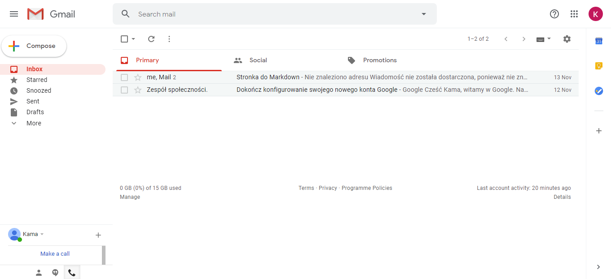
2. Create and send your email
To create and send your email you need to:
- First, click the white, big 'Compose' button which is located in the top left corner of your Gmail
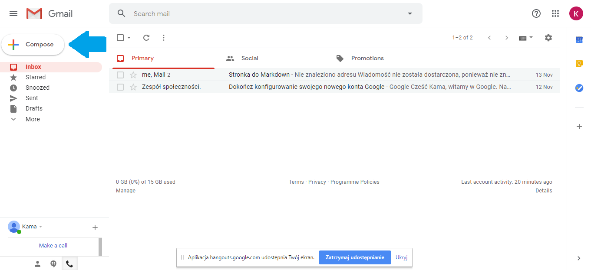 - A 'new message' window will pop out on your screen
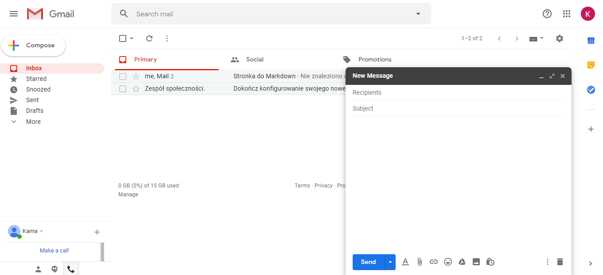You can change the size of the window, minimalize it or exit it by clicking one of the three buttons in the right upper corner of the 'message window'
- When you have your 'message window', now enter your recipent's name in the 'Recipients' section and your subject in the 'Subject' section
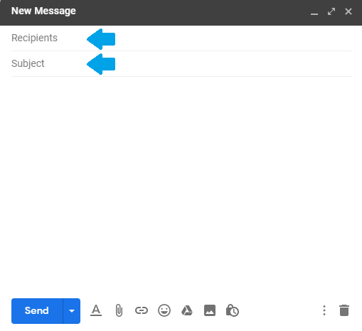 - When you have all of the above filled, it is time for entering your message in the field below the 'Subject' section
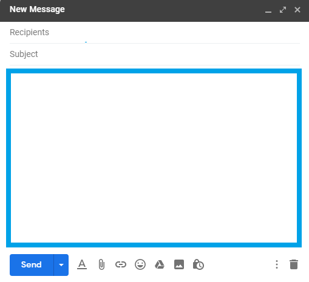Good tip: always read your email before sending it:)
- Now, just click the 'Send' button and your email will be send!
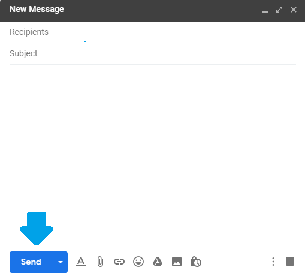Congrats!
A Special Friend in your Mailbox
Over the years, we have successfully integrated artificial intelligence into the Gmail Web App to elevate user experience. From the basics, Gmail will now check your emails for typographical errors to avoid common mistakes. As you type, you will also find predictive suggestions on how to complete your statements. You can accept a suggestion by pressing the tab button when suggestions appear but, since these suggestions run in the background, you can type as usual should you not wish to use a suggestion. This, in fact, comes closely linked to the Smart Replies and Smart Compose features which offer suggestions for email responses based on the subject and contents of the previous email. All this is aimed at cutting down the time taken drafting emails and responses.
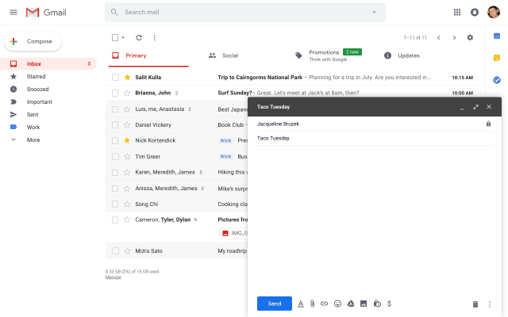
3. Access your tasks
Your calendar, including designated tasks and events can all be accessed from within the Gmail Web App across all devices you are currently logged into. To work on your tasks, turn your attention to the toolbar located to the right of your emails in the Dashboard.
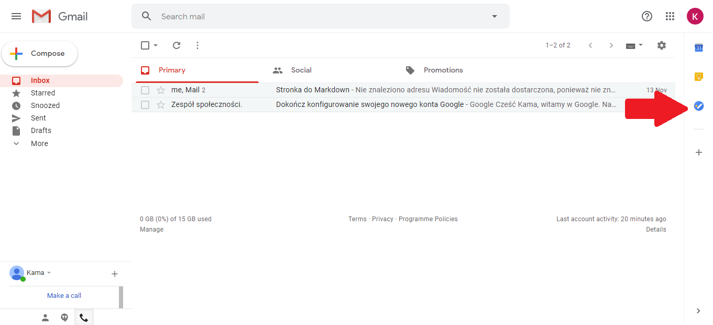
- Click on Google Tasks in the toolbar. This should bring up the current list of tasks saved to your Gmail account.
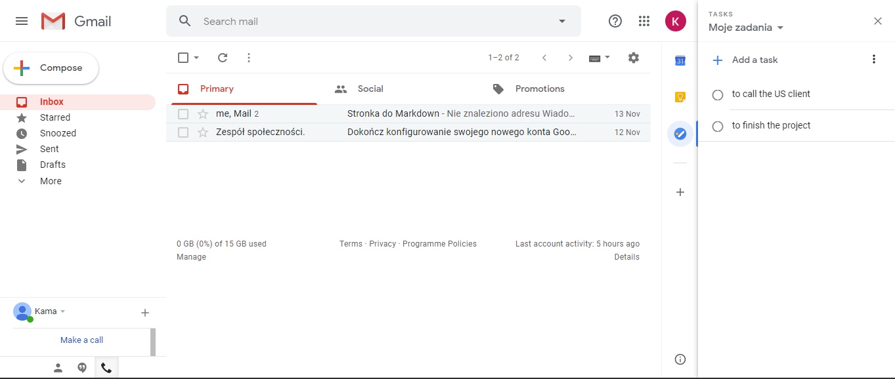 - If you want to add a task, click on "+ Add a task".
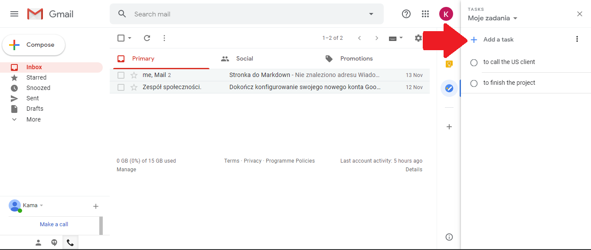 - To modify or remove an existing task, highlight the task then click "Edit". From the editing window, you will find the option to delete the task.

- Your tasks can be grouped into lists. To make a new list of tasks, click on the down arrow next to the "My Tasks" heading. Then, click on "Create new list". From the same drop down menu, you are able to see any other lists you currently have and navigate smoothly between them.

Aside from designated tasks, the same toolbar gives you access to the Gmail Calendar from which you can view daily schedules and appointments.
4. Other Google Apps
Conveniently, the Gmail Web App allows you to jump across the many Google Apps that come with your account. You can find these neatly grouped in the Google Apps section to the top right of the Dashboard. From here, you can also easily jump into Google Account settings if you ever feel like giving your preferences a tweak.
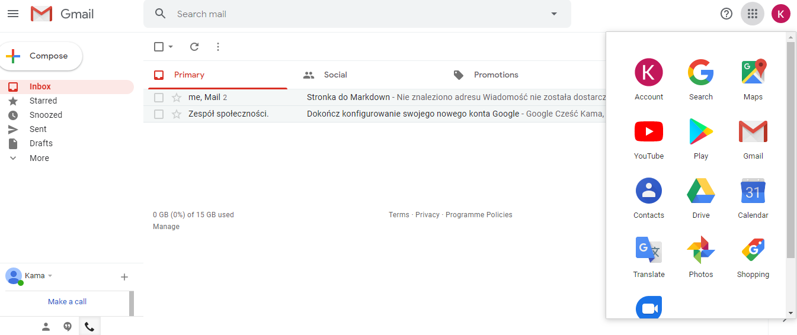